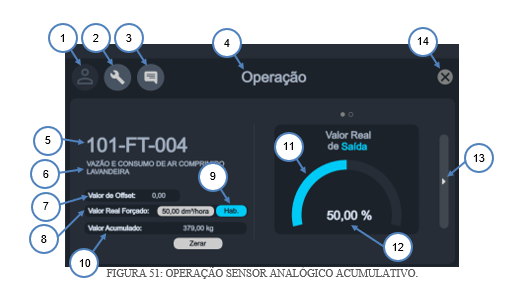
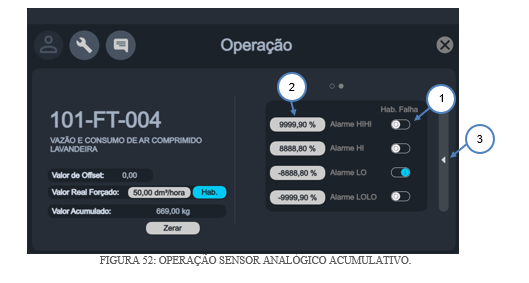
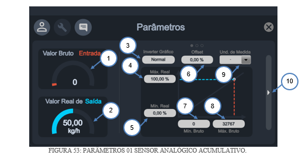
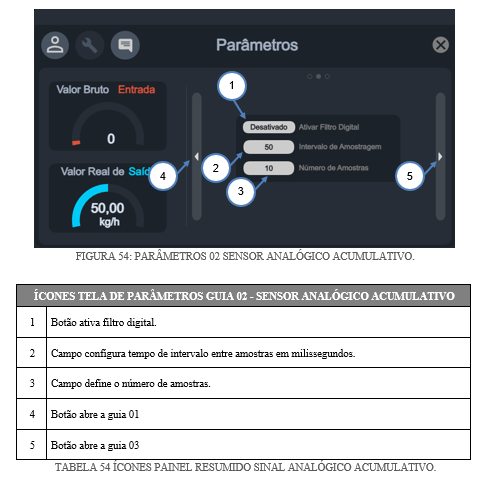
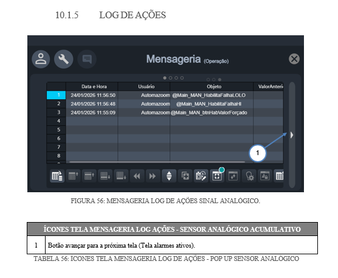
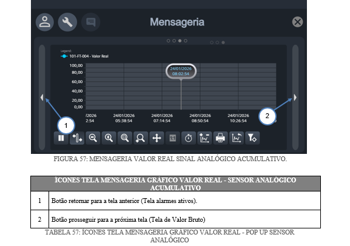
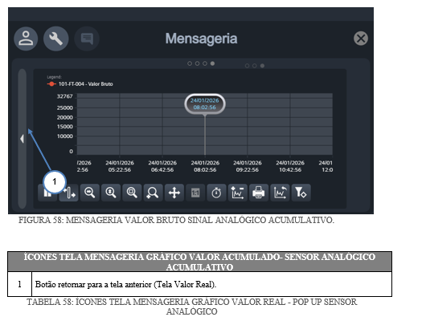
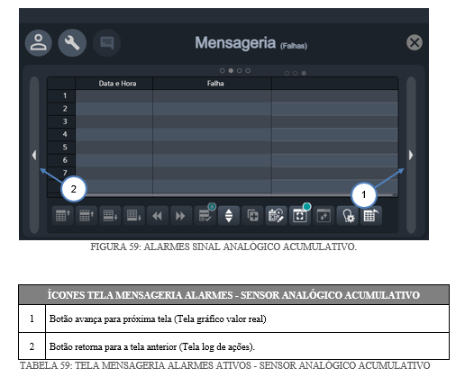

10.1.1 - MENSAGERIA
A aba de mensageria dos sensores analógicos acumulativos possui quatro telas:
- Log de ações dos usuários.
- Alarmes ativos.
- Gráfico do valor real.
- Gráfico do valor acumulado da última hora.
10.2.1 - FACEPLATE
Cada sensor possui um painel com informações básicas. Ao clicar no painel, é possível acessar a tela de operação do equipamento.

| Nº | DESCRIÇÃO |
|---|---|
| 1 | Nome do equipamento. |
| 2 | Valor real. |
| 3 | Valor acumulado. |
| 4 | Ícone de valor real forçado. |
TABELA 51: ÍCONES DO PAINEL RESUMIDO.
Voltar ao menu10.2.2 - OPERAÇÃO
A tela de operação possui duas guias, apresentando informações do sensor e permitindo alterações conforme o nível de acesso do usuário.
GUIA 01 - OPERAÇÃO
| Nº | DESCRIÇÃO |
|---|---|
| 1 | Acessa a aba de operação. |
| 2 | Acessa a aba de parâmetros. |
| 3 | Acessa a aba de mensageria. |
| 4 | Nome da aba atual. |
| 5 | Nome do sensor. |
| 6 | Descrição do sensor. |
| 7 | Valor de offset atual. |
| 8 | Valor real forçado. |
| 9 | Habilita ou desabilita o valor forçado. |
| 10 | Valor acumulado. |
| 11 | Indicador gráfico do valor real e das faixas de alarme. |
| 12 | Valor real de saída. |
| 13 | Acessa a segunda guia. |
| 14 | Fecha o pop-up. |
TABELA 51: ÍCONES DA TELA DE OPERAÇÃO GUIA 01.
GUIA 02 - OPERAÇÃO

| Nº | DESCRIÇÃO |
|---|---|
| 1 | Habilita ou desabilita os alarmes. |
| 2 | Campos para configurar os limites dos alarmes. |
| 3 | Retorna à guia 01. |
TABELA 52: ÍCONES DA TELA DE OPERAÇÃO GUIA 02.
Voltar ao menu10.2.3 - PARÂMETROS
Nesta tela são configurados os valores máximos e mínimos, escala, offset, unidade de medida e filtro digital do sensor.
Também são definidos os parâmetros de acumulação, como tipo de acumulação, unidade de medida e opção de zerar o acumulador.
Essas configurações são permitidas apenas para usuários de manutenção ou administração.
GUIA 01 - PARÂMETROS

| Nº | DESCRIÇÃO |
|---|---|
| 1 | Valor analógico de entrada no CLP. |
| 2 | Valor de saída dentro da escala definida. |
| 3 | Inversão de escala. |
| 4 | Valor máximo da escala real. |
| 5 | Valor mínimo da escala real. |
| 6 | Configuração do offset. |
| 7 | Valor mínimo da escala analógica. |
| 8 | Valor máximo da escala analógica. |
| 9 | Seleção da unidade de medida. |
| 10 | Acessa a guia 02. |
TABELA 53: ÍCONES DA TELA DE PARÂMETROS GUIA 01.
GUIA 02 - PARÂMETROS

| Nº | DESCRIÇÃO |
|---|---|
| 1 | Ativa o filtro digital. |
| 2 | Configura o intervalo entre as amostras. |
| 3 | Define o número de amostras. |
| 4 | Retorna à guia 01. |
| 5 | Acessa a guia 03. |
TABELA 54: ÍCONES DA TELA DE PARÂMETROS GUIA 02.
Voltar ao menu10.2.4 - LOG DE AÇÕES

| Nº | DESCRIÇÃO |
|---|---|
| 1 | Avança para a tela de alarmes ativos. |
TABELA 56: ÍCONES DA TELA LOG DE AÇÕES.
Voltar ao menu10.2.5 - GRÁFICO VALOR REAL

| Nº | DESCRIÇÃO |
|---|---|
| 1 | Retorna à tela de alarmes ativos. |
| 2 | Avança para a tela de valor bruto. |
TABELA 57: ÍCONES DA TELA GRÁFICO VALOR REAL.
Voltar ao menu10.2.6 - GRÁFICO VALOR BRUTO

| Nº | DESCRIÇÃO |
|---|---|
| 1 | Retorna à tela de valor real. |
TABELA 58: ÍCONES DA TELA GRÁFICO VALOR ACUMULADO.
Voltar ao menu10.2.7 - ALARMES ATIVOS

| Nº | DESCRIÇÃO |
|---|---|
| 1 | Avança para a tela do gráfico de valor real. |
| 2 | Retorna à tela de log de ações. |
TABELA 59: ÍCONES DA TELA DE ALARMES ATIVOS.
Voltar ao menu